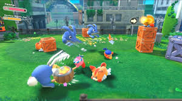

Most long running game series like Mario try to go 3D as soon as they possibly can, not Kirby though. For more than 20 years now it's been exclusively 3D, barring the the occasional minigame. So that's what made it a surprise when it finally stepped out of its comfort zone and finally made the jump to 3D. The result is just as good as the buildup suggests, it's an incredibly charming romp with a lot of variety, making it a lot like Mario Odyssey in that way
As simple as it soundsL the goal of this game was pretty clearly to do what the Kirby franchise has always done well and put it into 3D (make no mistake, that's not an easy feat-just look at Sonic), and it did so pretty well. Kirby's main attraction of inhaling enemies to copy their abilities and gain new moves and abilities is still here. Although there aren't as many copy abilities as in other games, it makes up for it with the fact you can now upgrade them with items you find in levels as well the game's new gimmick: Mouthful Mode.
Kirby and the rest of his gang have been taken to a mysteriously apocalyptic world, eeriely similar to our own. Here he uses his inhaling schtick to not eat real world objects, but instead stick to them with his mouth, (like one of those Kirby hats) while still being able to use them. It's here where the game can truely be anything and offer plenty of variety. An entire level can all of a sudden become a flying game like Star Fox as you stick to a real life paraglider, for instance.
Unlike other games, the goal isn't just to float over everything and make it to the end. Kirby has to save captured waddle dees to help him progress. Like other Kirby games, the main story isn't very long, it only clocks in at about 10 hours. But between getting all of the waddle dees, beating all of the levels, and getting all of the collectibles it can more than surpass 24 hours of playtime. It's also not very hard, even on the newly added hard mode.
Honestly, there's not much to say here. it's a quick fun, cozy adventure type of game. It might go down as easily as whatever Kirby has in his mouth, but it is a fun experience I would recommend to anyone. It doesn't ask too much of you and it's the perfect way to get introduced in the series here in 2025.